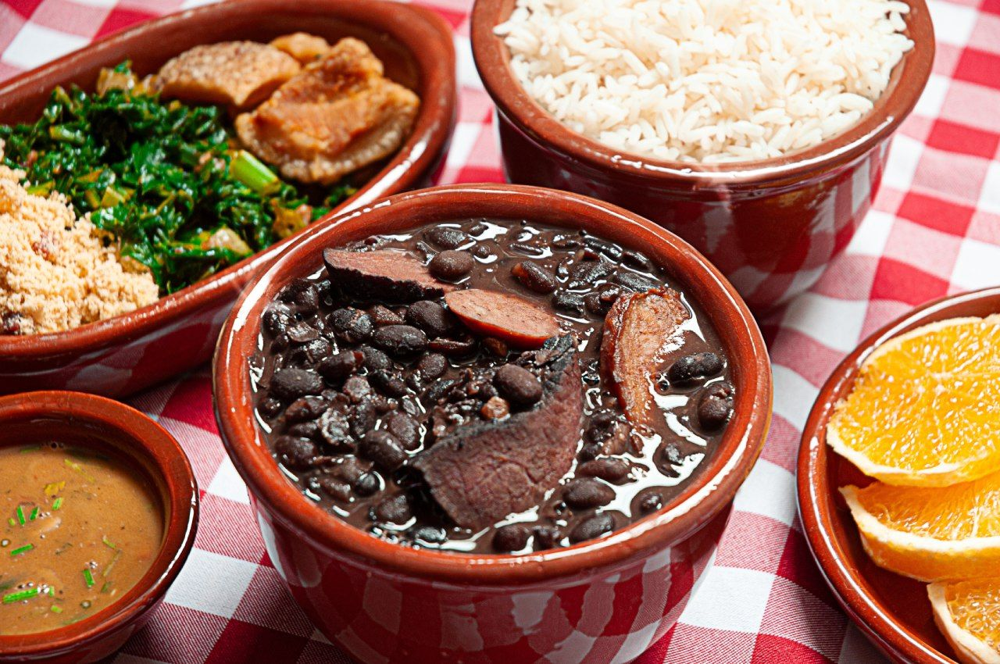
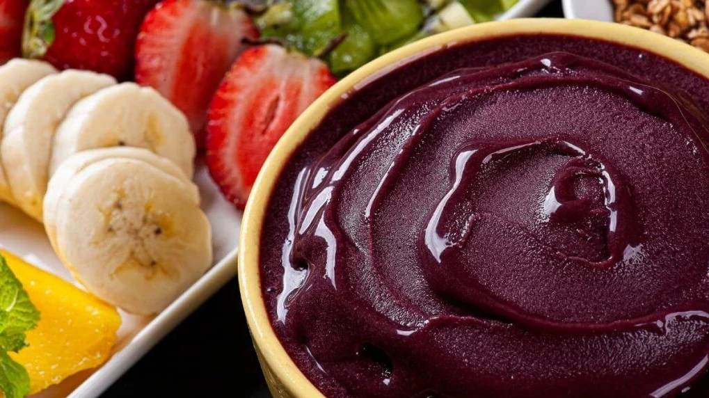
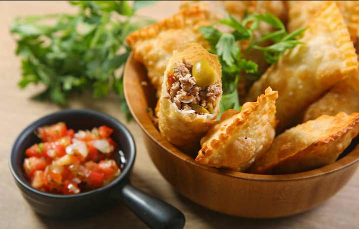
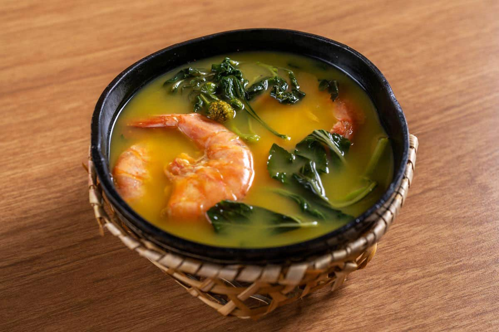
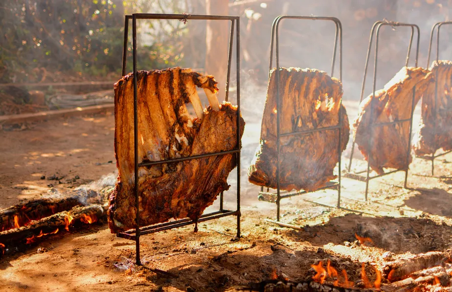

Gastronomia Brasileira
A culinária brasileira é uma das mais ricas e variadas do mundo. Cada região tem seus pratos típicos e sabores únicos que encantam os visitantes.

Feijoada
Considerada o prato nacional, a feijoada é feita com feijão preto e diferentes tipos de carne de porco. É servida com arroz, couve e farofa.

Açaí
Originário da região norte, o açaí se tornou popular em todo o Brasil. É servido como polpa congelada com granola e frutas.

Pão de Queijo
Vindo de Minas Gerais, o pão de queijo é feito com polvilho e queijo. É perfeito para o café da manhã ou lanche da tarde.

Pastel
O pastel é um salgado brasileiro popular, feito com massa fina e crocante frita, recheada com opções variadas, como carne, queijo ou até doces.

Tacacá
A culinária amazonense é baseada em peixes de água doce e frutos exóticos. O Tacacá (caldo com tucupi, jambu e camarão) e o Tambaqui assado na brasa são os grandes destaques. Outra iguaria famosa é o X-Caboquinho, um sanduíche de tucumã com queijo coalho e banana frita.

Churrasco gaúcho
O Churrasco gaúcho, feito no espeto e no fogo de chão, é famoso no mundo inteiro. Outros pratos indispensáveis são o Arroz de Carreteiro e o Galeto. Para acompanhar a conversa, o tradicional Chimarrão (infusão de erva-mate) é o símbolo maior da hospitalidade local.